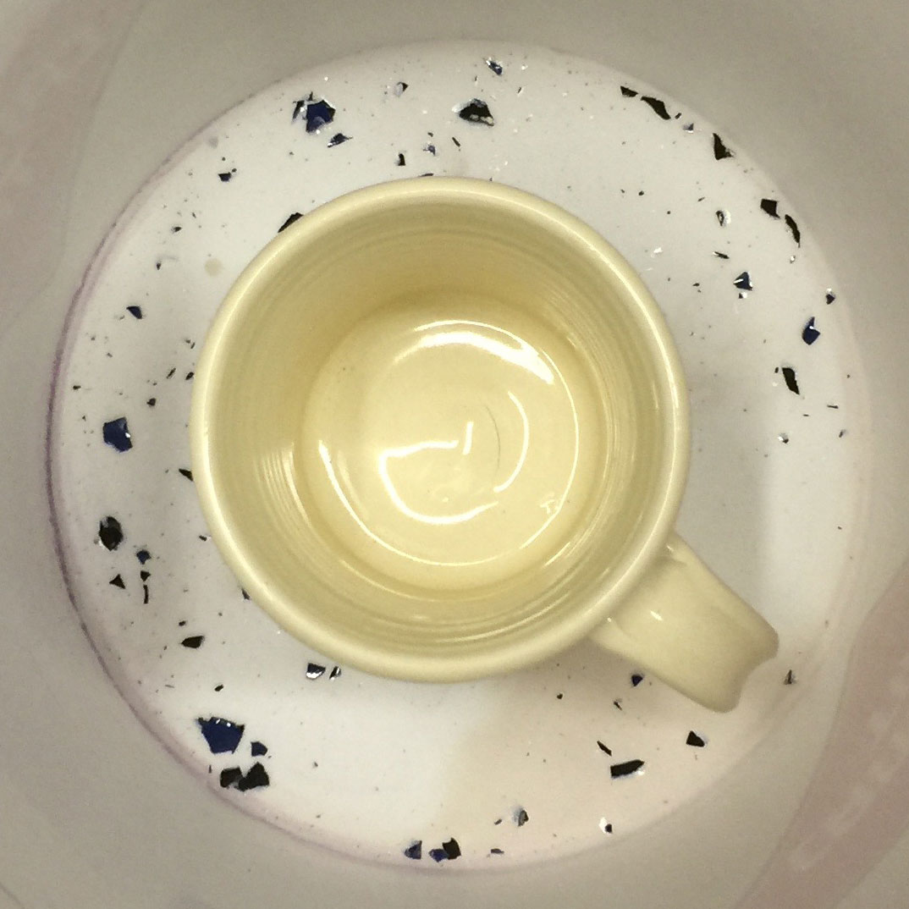
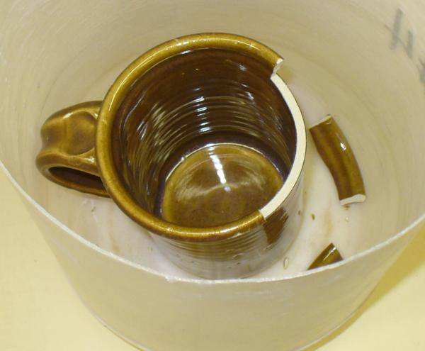
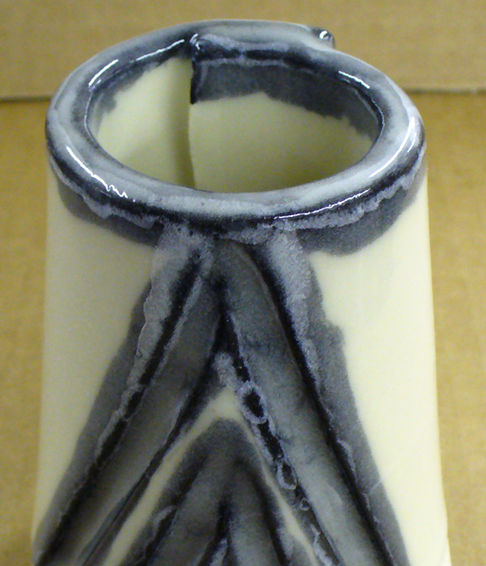
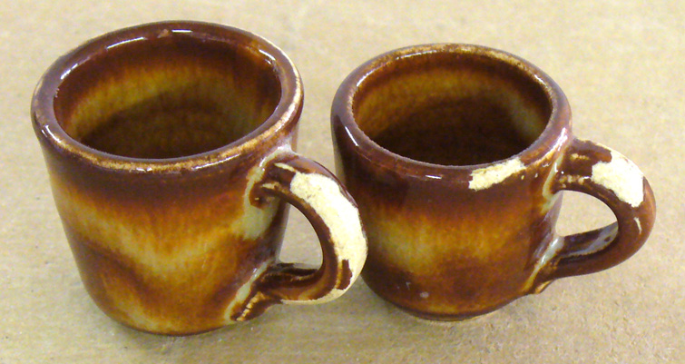
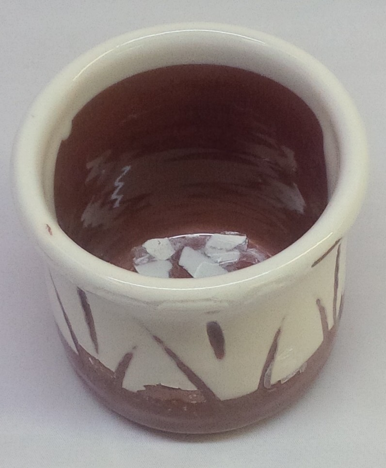

Glaze Shivering
Ask the right questions to analyse the real cause of glaze shivering. Do not just treat the symptoms, the real cause is thermal expansion mismatch with the body.
Details
Shivering is the opposite of glaze crazing, the fired glaze is under compression and wants to flake off the body, especially at edges. However the route cause is a mismatch in the thermal expansions of body and glaze, thus the process of resolving it is similar as for crazing. It it much less common because glazes tend to have a higher thermal expansion than bodies and because they can tolerate being under compression much better than being under tension. Of course, if a glaze is under compression on the inside of a vessel, the body will be under tension and this can cause failure of the piece.
When the body-glaze interface is not well developed an overly compressed glaze will be able to release itself much more easily, especially on the edges of contours. This can be the case, not only with low fired ware, but where engobes or slips are being used under the glaze. If the engobe does not contain enough flux to firmly adhere it to the body and develop hardness, it will not be able to bond to the glaze well.
It is important to recognize that the appearance of this issue is serious, a few shivered pieces coming out of the kiln could mean that all of them will shiver with time! Shivering is also serious in that razor sharp flakes of glaze could get into food or drink, you must make sure this can never happen.
While many band-aid fixes to the issue are recommended, the base problem is a mismatch between the co-efficient of thermal expansion (COE) of body and glaze, nothing will properly fix it except raising the COE of the glaze (or lowering the body COE). Many many glazes have high expansion Na2O and K2O that are more than they need to be (thus the prevalence of crazing), but here we actually need more of them (so this is an easy fix to do). However in fast-fire settings, Na2O can cause bubbling (fast fire glazes have lower B2O3, higher ZnO and CaO, lower Na2O and higher SiO2, you must work within these guidelines). But you cannot just add soda feldspar or a high soda frit because they also contain other oxides. Using ceramic chemistry software (like Digitalfire Insight), you can figure out how to adjust the recipe so that the only change in the chemistry is an increase in the Na2O/K2O. In the case of adding feldspar you would calculate how much to reduce the kaolin and silica in the recipe to compensate for the Al2O3 and SiO2 also sourced from the feldspar. There are instructional videos at Digitalfire.com that demonstrate this.
It may also be an idea of check your clay body. Has it changed? For example, if it is less mature its expansion could have increased and the glaze:body bond could have been degraded.
Related Information
Razor-sharp flakes of shivering glaze are flying off this piece

This picture has its own page with more detail, click here to see it.
This mug has been pinging every few minutes. For days. Razor-sharp chips of the dark blue glaze on the outside are popping off. This is happening because the coefficient of thermal expansion (COE) of the glaze is too low compared to that of this low-fire talc body. Simplistically, it is a size 6 glaze stuck onto a size 5 body! The glaze needs its COE increased without too much impact on its other properties (e.g. melting range, surface character, durability, color response) and the least impactful way to do that is by substituting some of the existing CaO, MgO, Li2O, SrO or ZnO for super-high-expansion Na2O. That can be done using glaze chemistry or by substituting some of and existing frit in the recipe for one like Ferro 3110 (it contains lots of Na2O).
How to make a ceramic time-bomb

This picture has its own page with more detail, click here to see it.
This mug is pinging loudly and literally self-destructing in front of my eyes! Why? The glaze is under so much compression (the inside is pushing outward, the outside inward). Spiral cracks are developing all the way up the side. Small razor-sharp flakes are shivering off convex contours. Why? I accidentally fired a low-temperate talc body at cone 6 (the glaze is the Alberta Slip base cone 6 glossy). The clay body is not overly mature, but it just has an extremely high thermal expansion (talc is added to increase the expansion to fit low fire commercial glazes, they would craze without it). Shivering is serious, it is a mismatch of thermal expansion between body and glaze. It can happen at any temperature.
Low expansion glazes craze less, but they can shiver

This picture has its own page with more detail, click here to see it.
Example of serious glaze shivering using G1215U low expansion glaze on a high silica body at cone 6. Be careful to do a thermal stress test before using a transparent glaze on functional ware.
A classic Albany glaze that often shivers

This picture has its own page with more detail, click here to see it.
These mugs have experienced very serious shivering. This is an Albany Slip glaze with 10% lithium carbonate, it is known to have a very low thermal expansion. This problem can be solved by reducing the amount of lithium or adding high-expansion sodium or potassium. However these fixes will likely affect the appearance.
These common Ferro frits have distinct uses in traditional ceramics

This picture has its own page with more detail, click here to see it.
I used Veegum to form 10 gram GBMF test balls and fired them at cone 08 (1700F). Frits melt really well, they do have an LOI like raw materials. These contain boron (B2O3), it is a low expansion super-melter that raw materials don’t have. Frit 3124 (glossy) and 3195 (silky matte) are balanced-chemistry bases (just add 10-15% kaolin for a cone 04 glaze, or more silica+kaolin to go higher). Consider Frit 3110 a man-made low-Al2O3 super feldspar. Its high-sodium makes it high thermal expansion. It works really well in bodies and is great to make glazes that craze. The high-MgO Frit 3249 (made for the abrasives industry) has a very-low expansion, it is great for fixing crazing glazes. Frit 3134 is similar to 3124 but without Al2O3. Use it where the glaze does not need more Al2O3 (e.g. already has enough clay). It is no accident that these are used by potters in North America, they complement each other well (equivalents are made around the world by others). The Gerstley Borate is a natural source of boron (with issues frits do not have).
Glaze is shivering at the engobe-body interface

This picture has its own page with more detail, click here to see it.
Example of a glaze (G1916J) shivering on the rim of a mug. But the situation is not as it might appear. This glaze fits some bodies, crazes on others and shivers on yet others! This is a testament to how tricky it can be to fit glaze at low temperatures. But this is not a white glaze, it is a transparent over a white slip (or engobe). Alone on this red body this glaze appears to fit OK, but here it is exploiting the weaker body-engobe interface - this is where the release is taking place. This failure turned out to be a blessing, alerting us to the need to increase the expansion of the glaze a little to fit this body better (and enable its use with this engobe). This being said, the engobe likewise may be under too much compression, it may not contain enough silica.
There is a morality to making functional vessels used by others

This picture has its own page with more detail, click here to see it.
On the inside you can see the razor sharp flakes of glaze that have already fallen off the outside of this test piece. They reveal that the clear glaze, which looks fine on the inside, is under too much compression. The weaker interface between the slip under layer and the body provides a point of failure. This reminds us of the morality of making pottery, we have a responsibility to make safe ware.
Links
| Troubles |
Glaze Crazing
Ask the right questions to analyse the real cause of glaze crazing. Do not just treat the symptoms, the real cause is thermal expansion mismatch with the body. |
| Glossary |
Glaze shivering
Shivering is a ceramic glaze defect that results in tiny flakes of glaze peeling off edges of ceramic ware. It happens because the thermal expansion of the body is too much higher than the glaze. |
| Glossary |
Co-efficient of Thermal Expansion
The co-efficient of thermal expansion of ceramic bodies and glazes determines how well they fit each other and their ability to survive sudden heating and cooling without cracking. |
| Glossary |
Calculated Thermal Expansion
The thermal expansion of a glaze can be predicted (relatively) and adjusted using simple glaze chemistry. Body expansion cannot be calculated. |
| Articles |
Understanding Thermal Expansion in Ceramic Glazes
Understanding thermal expansion is the key to dealing with crazing or shivering. There is a rich mans and poor mans way to fit glazes, the latter might be better. |
| Articles |
Adjusting Glaze Expansion by Calculation to Solve Shivering
This page demonstrates how you might use INSIGHT software to do calculations that will help you increase the thermal expansion of a glaze while having minimal impact on other properties. |
 PayPal | No tracking, No ads, No paywall, No transient content! Just organized, concise information constantly updated and improved. Was this helpful? Consider supporting me. |
| By Tony Hansen Follow me on        |  |
Got a Question?
Buy me a coffee and we can talk 

https://digitalfire.com, All Rights Reserved
Privacy Policy